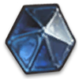

<ion-list class="mana-list ion-no-margin" lines="full" >
  <ion-radio-group >

    <ion-item class="mana-item" *ngFor="let m of mana" >
      <ion-label class="p-relative ion-no-margin ion-no-padding">
        <ion-avatar class="ion-no-margin ion-no-padding" >
          
        </ion-avatar>
        <span class="p-absolute custom-mana-number">{{m}}</span>
        <ion-radio class="custom-mana-button ion-no-margin ion-no-padding" (ionSelect)="filterMana(m)" slot="start" value="{{m}}"
          *ngIf="selectedMana == m " checked></ion-radio>
        <ion-radio class="custom-mana-button ion-no-margin ion-no-padding" (ionSelect)="filterMana(m)" slot="start" value="{{m}}"
        *ngIf="selectedMana != m"></ion-radio>
      </ion-label>
    </ion-item>
    <ion-icon class="close-mana" color="white" name="close" (click)="dismissPopover()"></ion-icon>
  </ion-radio-group>
</ion-list>

